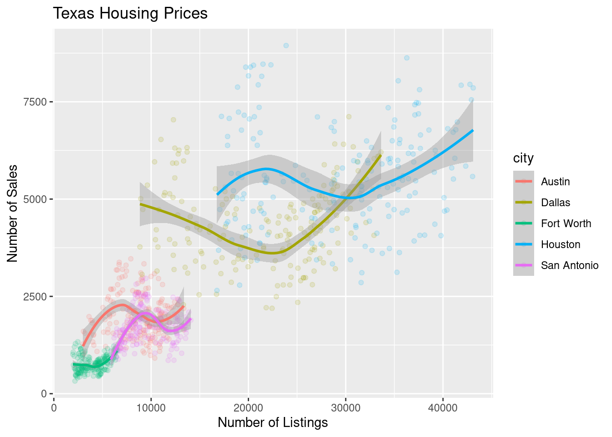
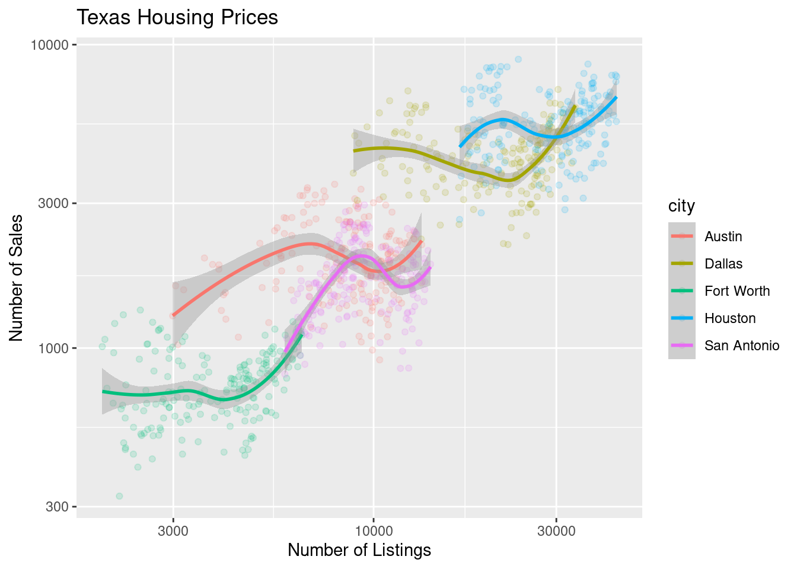
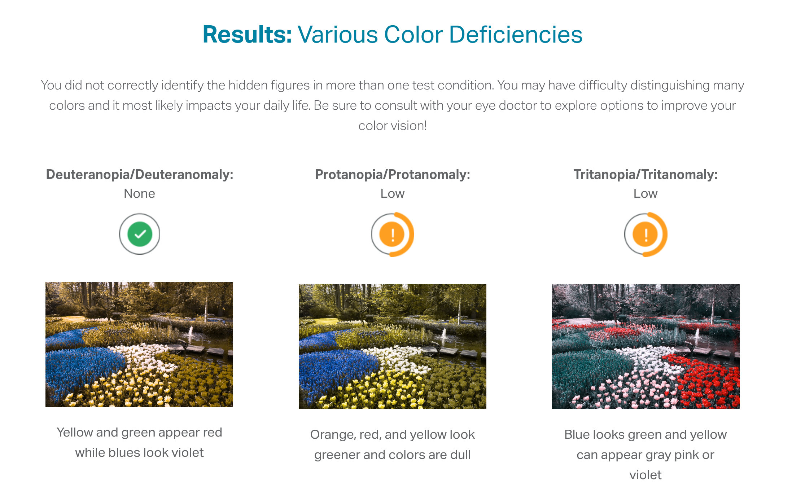
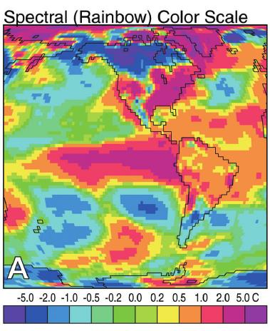
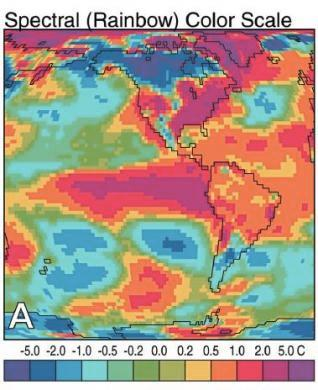
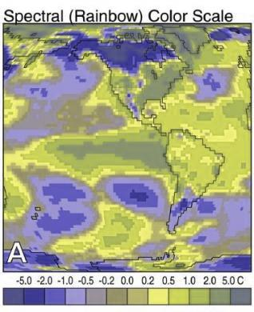
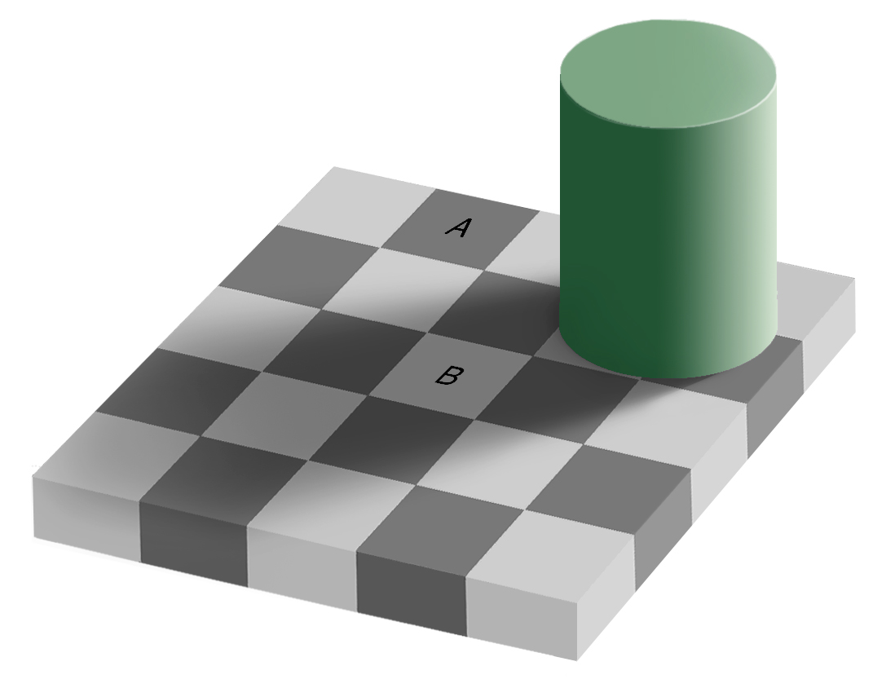
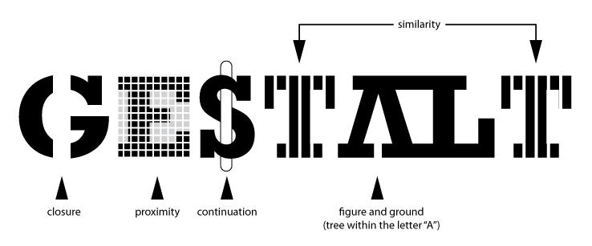

library(ggplot2)
data(txhousing)
ggplot(data = txhousing, aes(x = date, y = median)) +
geom_point()10 Data Visualization
There are a lot of different types of charts, and equally many ways to categorize and describe the different types of charts.
This is one of the less serious schemes I’ve seen
But, in my opinion, Randall missed the opportunity to put a pie chart as Neutral Evil.

Hopefully by the end of this, you will be able to at least make the charts which are most commonly used to show data and statistical concepts.
10.1 Why do we create graphics?
The greatest possibilities of visual display lie in vividness and inescapability of the intended message. A visual display can stop your mental flow in its tracks and make you think. A visual display can force you to notice what you never expected to see. (“Why, that scatter diagram has a hole in the middle!”) – John Tukey, Data Based Graphics: Visual Display in the Decades to Come
Fundamentally, charts are easier to understand than raw data.
When you think about it, data is a pretty artificial thing. We exist in a world of tangible objects, but data are an abstraction - even when the data record information about the tangible world, the measurements are a way of removing the physical and transforming the “real world” into a virtual thing. As a result, it can be hard to wrap our heads around what our data contain. The solution to this is to transform our data back into something that is “tangible” in some way – if not physical and literally touch-able, at least something we can view and “wrap our heads around”.
Consider this thought experiment: You have a simple data set - 2 variables, 500 observations. You want to get a sense of how the variables relate to each other. You can do one of the following options:
- Print out the data set
- Create some summary statistics of each variable and perhaps the covariance between the two variables
- Draw a scatter plot of the two variables
Which one would you rather use? Why?
Our brains are very good at processing large amounts of visual information quickly. Evolutionarily, it’s important to be able to e.g. survey a field and pick out the tiger that might eat you. When we present information visually, in a format that can leverage our visual processing abilities, we offload some of the work of understanding the data to a chart that organizes it for us. You could argue that printing out the data is a visual presentation, but it requires that you read that data in as text, which we’re not nearly as equipped to process quickly (and in parallel).
It’s a lot easier to talk to non-experts about complicated statistics using visualizations. Moving the discussion from abstract concepts to concrete shapes and lines keeps people who are potentially already math or stat phobic from completely tuning out.
You’re going to learn how to make graphics by finding sample code, changing that code to match your data set, and tweaking things as you go. That’s the best way to learn this, and while ggplot and plotnine do have a structure and some syntax to learn, once you’re familiar with the principles, you’ll still want to learn graphics by doing it.
In this chapter, we’re going to use the ggplot2 package to create graphics in R, and the plotnine package to create graphics in python. plotnine is a direct port of ggplot2 to Python using the Python graphics engine. For the most part, the syntax is extremely similar, with only minimal changes to account for the fact that some R syntax doesn’t work in Python, and a few differences with the python rendering engine for graphics.
10.2 The Grammar of Graphics
The grammar of graphics is an approach first introduced in Leland Wilkinson’s book (Wilkinson 2005). Unlike other graphics classification schemes, the grammar of graphics makes an attempt to describe how the dataset itself relates to the components of the chart.

This has a few advantages:
- It’s relatively easy to represent the same dataset with different types of plots (and to find their strengths and weaknesses)
- Grammar leads to a concise description of the plot and its contents
- We can add layers to modify the graphics, each with their own basic grammar (just like we combine sentences and clauses to build a rich, descriptive paragraph)

I have turned off warnings for all of the code chunks in this chapter. When you run the code you may get warnings about e.g. missing points - this is normal, I just didn’t want to have to see them over and over again - I want you to focus on the changes in the code.
10.2.1 Exploratory Data Analysis with the grammar of graphics
from plotnine import *
from plotnine.data import txhousing
ggplot(aes(x = "date", y = "median"), data = txhousing) + geom_point()<ggplot: (8788161236176)>
/__w/Stat151/Stat151/renv/python/virtualenvs/renv-python-3.8/lib/python3.8/site-packages/plotnine/layer.py:401: PlotnineWarning: geom_point : Removed 616 rows containing missing values.When creating a grammar of graphics chart, we start with the data (this is consistent with the data-first tidyverse philosophy).
Identify the dimensions of your dataset you want to visualize.
Decide what aesthetics you want to map to different variables. For instance, it may be natural to put time on the \(x\) axis, or the experimental response variable on the \(y\) axis. You may want to think about other aesthetics, such as color, size, shape, etc. at this step as well.
- It may be that your preferred representation requires some summary statistics in order to work. At this stage, you would want to determine what variables you feed in to those statistics, and then how the statistics relate to the geoms that you’re envisioning. You may want to think in terms of layers - showing the raw data AND a summary geom.
In most cases,
ggplotwill determine the scale for you, but sometimes you want finer control over the scale - for instance, there may be specific, meaningful bounds for a variable that you want to directly set.Coordinate system: Are you going to use a polar coordinate system? (Please say no, for reasons we’ll get into later!)
Facets: Do you want to show subplots based on specific categorical variable values?
(this list modified from Sarkar (2018)).
Let’s explore the txhousing data a bit more thoroughly by adding some complexity to our chart. This example will give me an opportunity to show you how an exploratory data analysis might work in practice, while also demonstrating some of ggplot2’s features.
Before we start exploring, let’s add a title and label our axes, so that we’re creating good, informative charts.
ggplot(data = txhousing, aes(x = date, y = median)) +
geom_point() +
xlab("Date") + ylab("Median Home Price") +
ggtitle("Texas Housing Prices")ggplot(aes(x = "date", y = "median"), data = txhousing) +\
geom_point() +\
xlab("Date") + ylab("Median Home Price") +\
ggtitle("Texas Housing Prices")<ggplot: (8788161051417)>
/__w/Stat151/Stat151/renv/python/virtualenvs/renv-python-3.8/lib/python3.8/site-packages/plotnine/layer.py:401: PlotnineWarning: geom_point : Removed 616 rows containing missing values.First, we may want to show some sort of overall trend line. We can start with a linear regression, but it may be better to use a loess smooth (loess regression is a fancy weighted average and can create curves without too much additional effort on your part).
ggplot(data = txhousing, aes(x = date, y = median)) +
geom_point() +
geom_smooth(method = "lm") +
xlab("Date") + ylab("Median Home Price") +
ggtitle("Texas Housing Prices")We can also use a loess (locally weighted) smooth:
ggplot(data = txhousing, aes(x = date, y = median)) +
geom_point() +
geom_smooth(method = "loess") +
xlab("Date") + ylab("Median Home Price") +
ggtitle("Texas Housing Prices")ggplot(aes(x = "date", y = "median"), data = txhousing) + geom_point() +\
geom_smooth(method = "lm", color = "blue") +\
xlab("Date") + ylab("Median Home Price") +\
ggtitle("Texas Housing Prices")
# By default, geom_smooth in plotnine has a black line you can't see well<ggplot: (8788161033515)>
/__w/Stat151/Stat151/renv/python/virtualenvs/renv-python-3.8/lib/python3.8/site-packages/plotnine/layer.py:401: PlotnineWarning: geom_point : Removed 616 rows containing missing values.We can also use a loess (locally weighted) smooth:
ggplot(aes(x = "date", y = "median"), data = txhousing) + geom_point() +\
geom_smooth(method = "loess", color = "blue") +\
xlab("Date") + ylab("Median Home Price") +\
ggtitle("Texas Housing Prices")<ggplot: (8788157751278)>
/__w/Stat151/Stat151/renv/python/virtualenvs/renv-python-3.8/lib/python3.8/site-packages/plotnine/layer.py:401: PlotnineWarning: geom_point : Removed 616 rows containing missing values.Looking at the plots here, it’s clear that there are small sub-groupings (see, for instance, the almost continuous line of points at the very top of the group between 2000 and 2005). Let’s see if we can figure out what those additional variables are…
As it happens, the best viable option is City.
ggplot(data = txhousing, aes(x = date, y = median, color = city)) +
geom_point() +
geom_smooth(method = "loess") +
xlab("Date") + ylab("Median Home Price") +
ggtitle("Texas Housing Prices")That’s a really crowded graph! It’s slightly easier if we just take the points away and only show the statistics, but there are still way too many cities to be able to tell what shade matches which city.
ggplot(data = txhousing, aes(x = date, y = median, color = city)) +
# geom_point() +
geom_smooth(method = "loess") +
xlab("Date") + ylab("Median Home Price") +
ggtitle("Texas Housing Prices")ggplot(aes(x = "date", y = "median", color = "city"), data = txhousing) +\
geom_point() +\
geom_smooth(method = "loess") +\
xlab("Date") + ylab("Median Home Price") +\
ggtitle("Texas Housing Prices")<ggplot: (8788155284221)>
/__w/Stat151/Stat151/renv/python/virtualenvs/renv-python-3.8/lib/python3.8/site-packages/plotnine/layer.py:401: PlotnineWarning: geom_point : Removed 616 rows containing missing values.That’s a really crowded graph! It’s slightly easier if we just take the points away and only show the statistics, but there are still way too many cities to be able to tell what shade matches which city.
ggplot(aes(x = "date", y = "median", color = "city"), data = txhousing) +\
geom_smooth(method = "loess") +\
theme(subplots_adjust={'right': 0.5}) +\
xlab("Date") + ylab("Median Home Price") +\
ggtitle("Texas Housing Prices")This is one of the first places we see differences in Python and R’s graphs - python doesn’t allocate sufficient space for the legend by default. In Python, you have to manually adjust the theme to show the legend (or plot the legend separately).
In reality, though, you should not ever map color to something with more than about 7 categories if your goal is to allow people to trace the category back to the label. It just doesn’t work well perceptually.
So let’s work with a smaller set of data: Houston, Dallas, Fort worth, Austin, and San Antonio (the major cities).
Another way to show this data is to plot each city as its own subplot. In ggplot2 lingo, these subplots are called “facets”. In visualization terms, we call this type of plot “small multiples” - we have many small charts, each showing the trend for a subset of the data.
citylist <- c("Houston", "Austin", "Dallas", "Fort Worth", "San Antonio")
housingsub <- dplyr::filter(txhousing, city %in% citylist)
ggplot(data = housingsub, aes(x = date, y = median, color = city)) +
geom_point() +
geom_smooth(method = "loess") +
xlab("Date") + ylab("Median Home Price") +
ggtitle("Texas Housing Prices")Here’s the facetted version of the chart:
ggplot(data = housingsub, aes(x = date, y = median)) +
geom_point() +
geom_smooth(method = "loess") +
facet_wrap(~city) +
xlab("Date") + ylab("Median Home Price") +
ggtitle("Texas Housing Prices")Notice I’ve removed the aesthetic mapping to color as it’s redundant now that each city is split out in its own plot.
citylist = ["Houston", "Austin", "Dallas", "Fort Worth", "San Antonio"]
housingsub = txhousing[txhousing['city'].isin(citylist)]
ggplot(aes(x = "date", y = "median", color = "city"), data = housingsub) +\
geom_point() +\
geom_smooth(method = "loess") +\
theme(subplots_adjust={'right': 0.75}) +\
xlab("Date") + ylab("Median Home Price") +\
ggtitle("Texas Housing Prices")<ggplot: (8788155159869)>Here’s the facetted version of the chart:
ggplot(aes(x = "date", y = "median"), data = housingsub) +\
geom_point() +\
geom_smooth(method = "loess", color = "blue") +\
facet_wrap("city") +\
xlab("Date") + ylab("Median Home Price") +\
ggtitle("Texas Housing Prices")<ggplot: (8788161088284)>
/__w/Stat151/Stat151/renv/python/virtualenvs/renv-python-3.8/lib/python3.8/site-packages/plotnine/utils.py:371: FutureWarning: The frame.append method is deprecated and will be removed from pandas in a future version. Use pandas.concat instead.
/__w/Stat151/Stat151/renv/python/virtualenvs/renv-python-3.8/lib/python3.8/site-packages/plotnine/utils.py:371: FutureWarning: The frame.append method is deprecated and will be removed from pandas in a future version. Use pandas.concat instead.Now that we’ve simplified our charts a bit, we can explore a couple of the other quantitative variables by mapping them to additional aesthetics:
ggplot(data = housingsub, aes(x = date, y = median, size = sales)) +
geom_point(alpha = .15) + # Make points transparent
geom_smooth(method = "loess") +
facet_wrap(~city) +
# Remove extra information from the legend -
# line and error bands aren't what we want to show
# Also add a title
guides(size = guide_legend(title = 'Number of Sales',
override.aes = list(linetype = NA,
fill = 'transparent'))) +
# Move legend to bottom right of plot
theme(legend.position = c(1, 0), legend.justification = c(1, 0)) +
xlab("Date") + ylab("Median Home Price") +
ggtitle("Texas Housing Prices")Notice I’ve removed the aesthetic mapping to color as it’s redundant now that each city is split out in its own plot.
citylist = ["Houston", "Austin", "Dallas", "Fort Worth", "San Antonio"]
housingsub = txhousing[txhousing['city'].isin(citylist)]
( # This is used to group lines together in python
ggplot(aes(x = "date", y = "median", size = "sales"), data = housingsub)
+ geom_point(alpha = .15) # Make points transparent
+ geom_smooth(method = "loess")
+ facet_wrap("city")
+ guides(size = guide_legend(title = 'Number of Sales'))
+ xlab("Date") + ylab("Median Home Price")
+ ggtitle("Texas Housing Prices")
)<ggplot: (8788155317233)>
/__w/Stat151/Stat151/renv/python/virtualenvs/renv-python-3.8/lib/python3.8/site-packages/plotnine/utils.py:371: FutureWarning: The frame.append method is deprecated and will be removed from pandas in a future version. Use pandas.concat instead.
/__w/Stat151/Stat151/renv/python/virtualenvs/renv-python-3.8/lib/python3.8/site-packages/plotnine/utils.py:371: FutureWarning: The frame.append method is deprecated and will be removed from pandas in a future version. Use pandas.concat instead.Not all of the features we used in R are available in plotnine in Python (in part because of limitations of the underlying graphics interface that plotnine uses). This does somewhat limit the customization we can do with python, but for the most part we can still get the same basic information back out.
Up to this point, we’ve used the same position information - date for the y axis, median sale price for the y axis. Let’s switch that up a bit so that we can play with some transformations on the x and y axis and add variable mappings to a continuous variable.
ggplot(data = housingsub, aes(x = listings, y = sales, color = city)) +
geom_point(alpha = .15) + # Make points transparent
geom_smooth(method = "loess") +
xlab("Number of Listings") + ylab("Number of Sales") +
ggtitle("Texas Housing Prices")
The points for Fort Worth are compressed pretty tightly relative to the points for Houston and Dallas. When we get this type of difference, it is sometimes common to use a log transformation1. Here, I have transformed both the x and y axis, since the number of sales seems to be proportional to the number of listings.
ggplot(data = housingsub, aes(x = listings, y = sales, color = city)) +
geom_point(alpha = .15) + # Make points transparent
geom_smooth(method = "loess") +
scale_x_log10() +
scale_y_log10() +
xlab("Number of Listings") + ylab("Number of Sales") +
ggtitle("Texas Housing Prices")
( # This is used to group lines together in python
ggplot(aes(x = "listings", y = "sales", color = "city"), data = housingsub)
+ geom_point(alpha = .15) # Make points transparent
+ geom_smooth(method = "loess")
+ scale_x_log10()
+ scale_y_log10()
+ xlab("Date") + ylab("Median Home Price")
+ ggtitle("Texas Housing Prices")
)<ggplot: (8788154980584)>
/__w/Stat151/Stat151/renv/python/virtualenvs/renv-python-3.8/lib/python3.8/site-packages/plotnine/layer.py:401: PlotnineWarning: geom_point : Removed 6 rows containing missing values.
Notice that the gridlines included in python by default are different than those in ggplot2 by default (personally, I vastly prefer the python version - it makes it obvious that we’re using a log scale).
For the next demonstration, let’s look at just Houston’s data. We can examine the inventory’s relationship to the number of sales by looking at the inventory-date relationship in x and y, and mapping the size or color of the point to number of sales.
houston <- dplyr::filter(txhousing, city == "Houston")
ggplot(data = houston, aes(x = date, y = inventory, size = sales)) +
geom_point(shape = 1) +
xlab("Date") + ylab("Months of Inventory") +
guides(size = guide_legend(title = "Number of Sales")) +
ggtitle("Houston Housing Data")ggplot(data = houston, aes(x = date, y = inventory, color = sales)) +
geom_point() +
xlab("Date") + ylab("Months of Inventory") +
guides(size = guide_colorbar(title = "Number of Sales")) +
ggtitle("Houston Housing Data")Which is easier to read?
What happens if we move the variables around and map date to the point color?
ggplot(data = houston, aes(x = sales, y = inventory, color = date)) +
geom_point() +
xlab("Number of Sales") + ylab("Months of Inventory") +
guides(size = guide_colorbar(title = "Date")) +
ggtitle("Houston Housing Data")Is that easier or harder to read?
houston = txhousing[txhousing.city=="Houston"]
(
ggplot(aes(x = "date", y = "inventory", size = "sales"), data = houston)
+ geom_point(shape = 'o', fill = 'none')
+ xlab("Date") + ylab("Median Home Price")
+ guides(size = guide_legend(title = "Number of Sales"))
+ ggtitle("Houston Housing Data")
)<ggplot: (8788155028363)>
/__w/Stat151/Stat151/renv/python/virtualenvs/renv-python-3.8/lib/python3.8/site-packages/plotnine/layer.py:401: PlotnineWarning: geom_point : Removed 1 rows containing missing values.In plotnine, we have to use matplotlib marker syntax.
(
ggplot(aes(x = "date", y = "inventory", color = "sales"), data = houston)
+ geom_point()
+ xlab("Date") + ylab("Median Home Price")
+ guides(size = guide_legend(title = "Number of Sales"))
+ ggtitle("Houston Housing Data")
)<ggplot: (8788154962369)>
/__w/Stat151/Stat151/renv/python/virtualenvs/renv-python-3.8/lib/python3.8/site-packages/plotnine/layer.py:401: PlotnineWarning: geom_point : Removed 1 rows containing missing values.Plotnine also defaults to different color schemes than ggplot2 – just something to know if you want the plot to be exactly the same. Personally, I prefer the viridis color scheme (what plotnine uses) to the ggplot2 defaults.
What happens if we move the variables around and map date to the point color?
(
ggplot(aes(x = "sales", y = "inventory", color = "date"), data = houston)
+ geom_point()
+ xlab("Number of Sales") + ylab("Months of Inventory")
+ guides(size = guide_colorbar(title = "Date"))
+ ggtitle("Houston Housing Data")
+ theme(subplots_adjust={'right': 0.75})
)<ggplot: (8788161131060)>
/__w/Stat151/Stat151/renv/python/virtualenvs/renv-python-3.8/lib/python3.8/site-packages/plotnine/layer.py:401: PlotnineWarning: geom_point : Removed 1 rows containing missing values.Is that easier or harder to read?
10.2.2 What type of chart to use?
It can be hard to know what type of chart to use for a particular type of data. I recommend figuring out what you want to show first, and then thinking about how to show that data with an appropriate plot type. Consider the following factors:
What type of variable is x? Categorical? Continuous? Discrete?
What type of variable is y?
How many observations do I have for each x/y variable?
Are there any important moderating variables?
Do I have data that might be best shown in small multiples? E.g. a categorical moderating variable and a lot of data, where the categorical variable might be important for showing different features of the data?
Once you’ve thought through this, take a look through catalogues like the R Graph Gallery to see what visualizations match your data and use-case.
10.3 Creating Good Charts
A chart is good if it allows the user to draw useful conclusions that are supported by data. Obviously, this definition depends on the purpose of the chart - a simple EDA chart is going to have a different purpose than a chart showing e.g. the predicted path of a hurricane, which people will use to make decisions about whether or not to evacuate.
Unfortunately, while our visual system is amazing, it is not always as accurate as the computers we use to render graphics. We have physical limits in the number of colors we can perceive, our short term memory, attention, and our ability to accurately read information off of charts in different forms.
10.3.1 Perceptual and Cognitive Factors
10.3.1.1 Color
Our eyes are optimized for perceiving the yellow/green region of the color spectrum. Why? Well, our sun produces yellow light, and plants tend to be green. It’s pretty important to be able to distinguish different shades of green (evolutionarily speaking) because it impacts your ability to feed yourself. There aren’t that many purple or blue predators, so there is less selection pressure to improve perception of that part of the visual spectrum.

Not everyone perceives color in the same way. Some individuals are colorblind or color deficient. We have 3 cones used for color detection, as well as cells called rods which detect light intensity (brightness/darkness). In about 5% of the population (10% of XY individuals, <1% of XX individuals), one or more of the cones may be missing or malformed, leading to color blindness - a reduced ability to perceive different shades. The rods, however, function normally in almost all of the population, which means that light/dark contrasts are extremely safe, while contrasts based on the hue of the color are problematic in some instances.
You can take a test designed to screen for colorblindness here
Your monitor may affect how you score on these tests - I am colorblind, but on some monitors, I can pass the test, and on some, I perform worse than normal. A different test is available here.

In reality, I know that I have issues with perceiving some shades of red, green, and brown. I have particular trouble with very dark or very light colors, especially when they are close to grey or brown.It is possible to simulate the effect of color blindness and color deficiency on an image.
|  |

|
 | |
|  |
In addition to colorblindness, there are other factors than the actual color value which are important in how we experience color, such as context.

Our brains are extremely dependent on context and make excellent use of the large amounts of experience we have with the real world. As a result, we implicitly “remove” the effect of things like shadows as we make sense of the input to the visual system. This can result in odd things, like the checkerboard and shadow shown above - because we’re correcting for the shadow, B looks lighter than A even though when the context is removed they are clearly the same shade.
Implications and Guidelines
- Do not use rainbow color gradient schemes - because of the unequal perception of different wavelengths, these schemes are misleading - the color distance does not match the perceptual distance.
- Avoid any scheme that uses green-yellow-red signaling if you have a target audience that may include colorblind people.
- To “colorblind-proof” a graphic, you can use a couple of strategies:
- double encoding - where you use color, use another aesthetic (line type, shape) as well to help your colorblind readers out
- If you can print your chart out in black and white and still read it, it will be safe for colorblind users. This is the only foolproof way to do it!
- If you are using a color gradient, use a monochromatic color scheme where possible. This is perceived as light -> dark by colorblind people, so it will be correctly perceived no matter what color you use.
- If you have a bidirectional scale (e.g. showing positive and negative values), the safest scheme to use is purple - white - orange. In any color scale that is multi-hue, it is important to transition through white, instead of from one color to another directly.
- Be conscious of what certain colors “mean”
- Leveraging common associations can make it easier to read a color scale and remember what it stands for (e.g. blue for cold, orange/red for hot is a natural scale, red = Republican and blue = Democrat in the US, white -> blue gradients for showing rainfall totals)
- Some colors can can provoke emotional responses that may not be desirable.2
- It is also important to be conscious of the social baggage that certain color schemes may have - the pink/blue color scheme often used to denote gender can be unnecessarily polarizing, and it may be easier to use a colder color (blue or purple) for men and a warmer color (yellow, orange, lighter green) for women3.
- There are packages such as
RColorBreweranddichromatthat have color palettes which are aesthetically pleasing, and, in many cases, colorblind friendly (dichromatis better for that thanRColorBrewer). You can also take a look at other ways to find nice color palettes.
10.3.1.2 Short Term Memory
We have a limited amount of memory that we can instantaneously utilize. This mental space, called short-term memory, holds information for active use, but only for a limited amount of time.
Try it out!
Click here, read the information, and then click to hide it.
1 4 2 2 3 9 8 0 7 8Wait a few seconds, then expand this section
What was the third number?Without rehearsing the information (repeating it over and over to yourself), the try it out task may have been challenging. Short term memory has a capacity of between 3 and 9 “bits” of information.
In charts and graphs, short term memory is important because we need to be able to associate information from e.g. a key, legend, or caption with information plotted on the graph. As a result, if you try to plot more than ~6 categories of information, your reader will have to shift between the legend and the graph repeatedly, increasing the amount of cognitive labor required to digest the information in the chart.
Where possible, try to keep your legends to 6 or 7 characteristics.
Implications and Guidelines
Limit the number of categories in your legends to minimize the short term memory demands on your reader.
- When using continuous color schemes, you may want to use a log scale to better show differences in value across orders of magnitude.
Use colors and symbols which have implicit meaning to minimize the need to refer to the legend.
Add annotations on the plot, where possible, to reduce the need to re-read captions.
10.3.1.3 Grouping and Sense-making
Imposing order on visual chaos.
What does the figure below look like to you?

When faced with ambiguity, our brains use available context and past experience to try to tip the balance between alternate interpretations of an image. When there is still some ambiguity, many times the brain will just decide to interpret an image as one of the possible options.
Did you see something like “3 circles, a triangle with a black outline, and a white triangle on top of that”? In reality, there are 3 angles and 3 pac-man shapes. But, it’s much more likely that we’re seeing layers of information, where some of the information is obscured (like the “mouth” of the pac-man circles, or the middle segment of each side of the triangle). This explanation is simpler, and more consistent with our experience.
Now, look at the logo for the Pittsburgh Zoo.

Do you see the gorilla and lionness? Or do you see a tree? Here, we’re not entirely sure which part of the image is the figure and which is the background.
The ambiguous figures shown above demonstrate that our brains are actively imposing order upon the visual stimuli we encounter. There are some heuristics for how this order is applied which impact our perception of statistical graphs.
The catchphrase of Gestalt psychology is
The whole is greater than the sum of the parts
That is, what we perceive and the meaning we derive from the visual scene is more than the individual components of that visual scene.

You can read about the gestalt rules here, but they are also demonstrated in the figure above.
In graphics, we can leverage the gestalt principles of grouping to create order and meaning. If we color points by another variable, we are creating groups of similar points which assist with the perception of groups instead of individual observations. If we add a trend line, we create the perception that the points are moving “with” the line (in most cases), or occasionally, that the line is dividing up two groups of points. Depending on what features of the data you wish to emphasize, you might choose different aesthetics mappings, facet variables, and factor orders.
Suppose I want to emphasize the change in the murder rate between 1980 and 2010.
I could use a bar chart (showing only the first 4 states alphabetically for space)
fbiwide <- read.csv("https://github.com/srvanderplas/Stat151/raw/main/data/fbiwide.csv")
library(dplyr)
fbiwide %>%
filter(Year %in% c(1980, 2010)) %>%
filter(State %in% c("Alabama", "Alaska", "Arizona", "Arkansas")) %>%
ggplot(aes(x = State, y = Murder/Population*100000, fill = factor(Year))) +
geom_col(position = "dodge") +
coord_flip() +
ylab("Murders per 100,000 residents")import pandas as pd
fbiwide = r.fbiwide
fbiwide = fbiwide.assign(YearFactor = pd.Categorical(fbiwide.Year))
fbiwide = fbiwide.assign(Murder100k = fbiwide.Murder/fbiwide.Population * 100000)
yr1980_2010 = fbiwide[fbiwide.Year.isin([1980,2010])]
subdata = yr1980_2010[yr1980_2010.State.isin(["Alabama", "Alaska", "Arizona", "Arkansas"])]
(
ggplot(aes(x = "State", y = "Murder100k", fill = "YearFactor"), data = subdata) +
geom_col(stat='identity', position = "dodge") +
coord_flip() +
ylab("Murders per 100,000 residents")
)<ggplot: (8788154861026)>Or, I could use a line chart
fbiwide %>%
filter(Year %in% c(1980, 2010)) %>%
ggplot(aes(x = Year, y = Murder/Population*100000, group = State)) +
geom_line() +
ylab("Murders per 100,000 residents")(
ggplot(aes(x = "Year", y = "Murder100k", group = "State"), data = yr1980_2010) +
geom_line() +
ylab("Murders per 100,000 residents")
)<ggplot: (8788161027533)>Or, I could use a box plot
fbiwide %>%
filter(Year %in% c(1980, 2010)) %>%
ggplot(aes(x = factor(Year), y = Murder/Population*100000)) +
geom_boxplot() +
ylab("Murders per 100,000 residents")
(
ggplot(aes(x = "YearFactor", y = "Murder100k"), data = yr1980_2010) +
geom_boxplot() +
ylab("Murders per 100,000 residents")
)<ggplot: (8788160991534)>Which one best demonstrates that in every state and region, the murder rate decreased?
The line segment plot connects related observations (from the same state) but allows you to assess similarity between the lines (e.g. almost all states have negative slope). The same information goes into the creation of the other two plots, but the bar chart is extremely cluttered, and the boxplot doesn’t allow you to connect single state observations over time. So while you can see an aggregate relationship (overall, the average number of murders in each state per 100k residents decreased) you can’t see the individual relationships.
The aesthetic mappings and choices you make when creating plots have a huge impact on the conclusions that you (and others) can easily make when examining those plots.4
10.3.2 General guidelines for accuracy
There are certain tasks which are easier for us relative to other, similar tasks.
When making judgments corresponding to numerical quantities, there is an order of tasks from easiest (1) to hardest (6), with equivalent tasks at the same level.5
- Position (common scale)
- Position (non-aligned scale)
- Length, Direction, Angle, Slope
- Area
- Volume, Density, Curvature
- Shading, Color Saturation, Color Hue
If we compare a pie chart and a stacked bar chart, the bar chart asks readers to make judgements of position on a non-aligned scale, while a pie chart asks readers to assess angle. This is one reason why pie charts are not preferable – they make it harder on the reader, and as a result we are less accurate when reading information from pie charts.
When creating a chart, it is helpful to consider which variables you want to show, and how accurate reader perception needs to be to get useful information from the chart. In many cases, less is more - you can easily overload someone, which may keep them from engaging with your chart at all. Variables which require the reader to notice small changes should be shown on position scales (x, y) rather than using color, alpha blending, etc.
There is also a general increase in dimensionality from 1-3 to 4 (2d) to 5 (3d). In general, showing information in 3 dimensions when 2 will suffice is misleading - the addition of that extra dimension causes an increase in chart area allocated to the item that is disproportionate to the actual area.
 .
.
Ted ED: How to spot a misleading graph - Lea Gaslowitz
Business Insider: The Worst Graphs Ever
Extra dimensions and other annotations are sometimes called “chartjunk” and should only be used if they contribute to the overall numerical accuracy of the chart (e.g. they should not just be for decoration).
References
R graphics
- ggplot2 cheat sheet
- ggplot2 aesthetics cheat sheet - aesthetic mapping one page cheatsheet
- ggplot2 reference guide
- R graph cookbook
- Data Visualization in R (@ramnathv)
Python graphics
- Plotnine documentation
- Matplotlib documentation - Matplotlib is the base that plotnine uses to replicate ggplot2 functionality
- Visualization with Matplotlib chapter of Python Data Science
- Scientific Visualization with Python
Footnotes
This isn’t necessarily a good thing, but you should know how to do it. The jury is still very much out on whether log transformations make data easier to read and understand↩︎
When the COVID-19 outbreak started, many maps were using white-to-red gradients to show case counts and/or deaths. The emotional association between red and blood, danger, and death may have caused people to become more frightened than what was reasonable given the available information.↩︎
Lisa Charlotte Rost. What to consider when choosing colors for data visualization.↩︎
See this paper for more details. This is the last chapter of my dissertation, for what it’s worth. It was a lot of fun. (no sarcasm, seriously, it was fun!)↩︎
See this paper for the major source of this ranking; other follow-up studies have been integrated, but the essential order is largely unchanged.↩︎